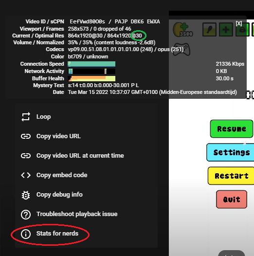
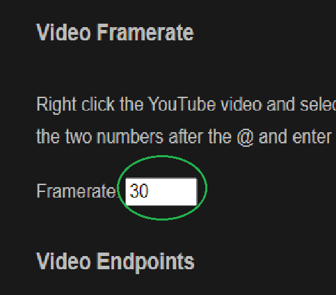
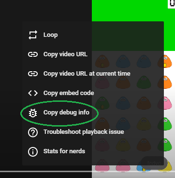
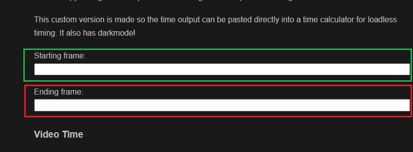
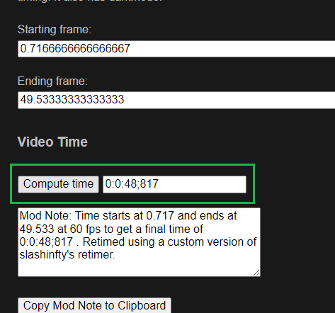

Takes start and stop points of a YouTube video or Google Photo's video, down to the frame, and gives the time between them in the format
1:23:45.678. Source code is available.
Source code for this version
Time calculator was taken from here
Right click the YouTube video and select “Stats for nerds.” The third line is “Current / Optimal Res” - find the two numbers after the @ and enter them for framerate.
Find the starting point (you can use the , and . keys to find the exact frame). Right
click the video and select “Copy debug info” and paste it for starting frame. Repeat for ending frame.
This custom version is made so the time output can be pasted directly into a time calculator for loadless timing. It also has darkmode!
Step 1, Right click and find the frame rate of the video in "stats for nerds" (Circled in red)
the frame rate will be after the @ in "current/optimal res" (Circled in green)
Step 2, put this framerate into the "framerate" box on the site. (Circled in green)
Step 3, Copy the debug info of the start and end frame. You can find the starts frame using , and .
What counts as the start frame is different for basically every game, make sure you have the right ones. 
Put the start frame in the box marked green, put the end frame in the box marked red.
Step 5, hit "calculate time" to calculate the time.
And that should be everything you need to know to use this, happy retiming!